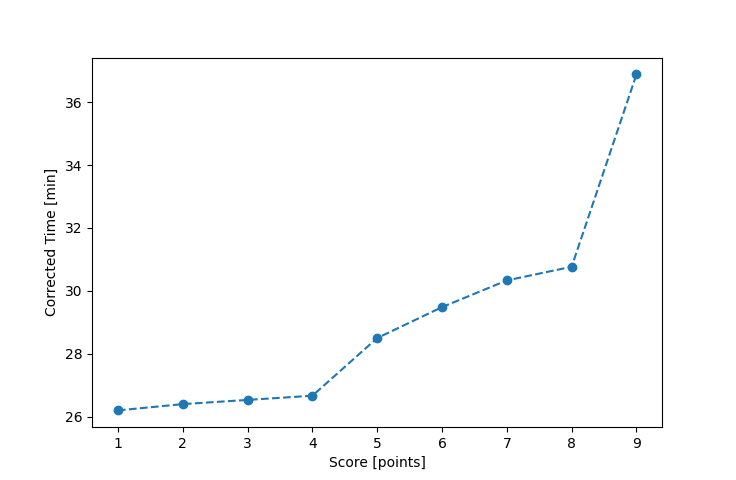

| Wind: | ? (BFT) |
|---|---|
| RC: | Art_MRalph_HBetsy_H |
| Date: | July 24, 2016 |
| Notes: | M2 10 |
| Rank / Score | Name | Boat | Input Time [mm:ss] | Input Offset [mm:ss] | Race Time [mm:ss] | Race Time [s] | Handicap | Corrected Time [s] | Corrected Time [mm:ss] |
|---|---|---|---|---|---|---|---|---|---|
| 1.0 | John_T | US-1 | 21:18 | 00:00 | 21:18 | 1278 | 0.90600 | 1411 | 23:31 |
| 2.0 | Bill_P | SF | 24:51 | 00:00 | 24:51 | 1491 | 1.03000 | 1448 | 24:08 |
| 3.0 | Ron_F | F5 | 25:15 | 00:00 | 25:15 | 1515 | 0.98100 | 1544 | 25:44 |
| 4.0 | Chris_E | SF | 26:47 | 00:00 | 26:47 | 1607 | 1.03000 | 1560 | 26:00 |
| 5.0 | David_Bu | SF | 26:55 | 00:00 | 26:55 | 1615 | 1.03000 | 1568 | 26:08 |
| 6.0 | Mike_F | SF | 30:45 | 00:00 | 30:45 | 1845 | 1.03000 | 1791 | 29:51 |
| 7.0 | Rod_H | LASEM | 30:46 | 00:00 | 30:46 | 1846 | 0.99400 | 1857 | 30:57 |
| 8.0 | Nick_S | SF | 33:36 | 00:00 | 33:36 | 2016 | 1.03000 | 1957 | 32:37 |
| 9.0 | Lewis_V | BCN | DNF | -- | -- | -- | -- | -- | DNF |

Application Notes:
All race results are unofficial
View source code at https://github.com/cessnao3/portsmouthracecalc/